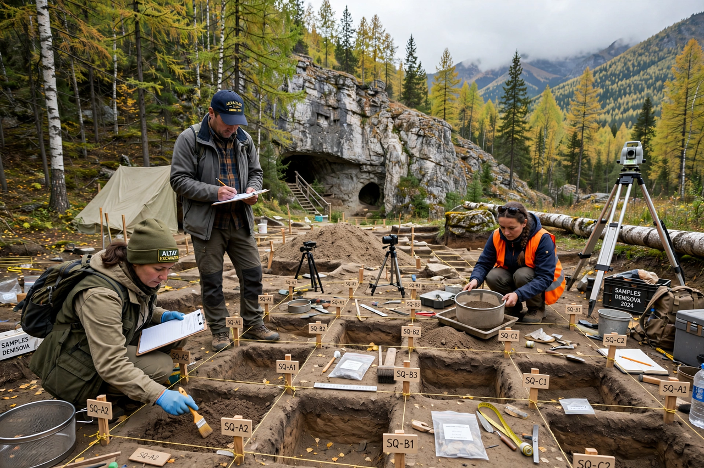

Denisovans

| Denisovans | |
| Identified | 2010, from DNA of a finger bone (Denisova 3) |
|---|---|
| Type locality | Denisova Cave, Altai Mountains, Siberia |
| Known range | Siberia to Tibet and Southeast Asia |
| Closest relatives | Neanderthals (sister group); modern humans |
The Denisovans are an extinct population of archaic humans known almost entirely from ancient DNA. In 2010, scientists led by Svante Pääbo sequenced the genome from a fragment of finger bone found in Denisova Cave in Siberia's Altai Mountains and found it belonged to a previously unknown group, related to but distinct from Neanderthals. They are the first extinct humans to be defined primarily by genetics rather than by skeletal form.
Evidence
Fossil evidence is sparse: several molars and bone fragments from Denisova Cave — including "Denny" (Denisova 11), a bone fragment from a girl with a Neanderthal mother and a Denisovan father — a partial jawbone from Baishiya Karst Cave on the Tibetan Plateau (identified by protein analysis in 2019, about 160,000 years old), and a molar from Tam Ngu Hao 2 cave in Laos. In 2025, a complete skull from Harbin, China ("Dragon Man"), was reported to carry Denisovan mitochondrial DNA and proteins, potentially giving the group a face.
Interbreeding with modern humans
Denisovans interbred with the ancestors of modern humans on multiple occasions. Their genetic legacy is strongest in Melanesians and Aboriginal Australians, who carry 4–6% Denisovan ancestry, and is present at lower levels across East and South Asia and the Americas. Inherited Denisovan variants include the EPAS1 gene aiding high-altitude adaptation in Tibetans, and immune-system alleles.
Range and fate
Proteins and DNA show Denisovans occupied Denisova Cave intermittently from roughly 300,000 to 50,000 years ago, and their DNA in sediments and fossils indicates a vast range from Siberia to tropical Southeast Asia. They disappear from the record after about 40,000–50,000 years ago, their populations apparently absorbed into expanding modern human groups.
See also: Hominidae, Jebel Irhoud